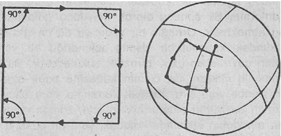
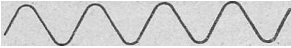

Einstein'a göre, bu varlıklar, boş uzayda hareket edebilme özelliğine sahiptirler ve mekaniksel kavramlarla hiçbir zaman açıklanamamaktadırlar.
Ve böylece yirminci yüzyılın başlarında, fizikçilerin ellerinde, farklı fenomenlere farklı bir biçimde uygulanacak iki değişik kuram bulunuyordu: Newton'un mekaniği ve Maxwell'in elektrodinamiği. Artık Newton'cu modelin bütün fiziksel bilimlerin temeli olma özelliği ve ayrıcalığı da ortadan kalkmıştı.
MODERN FİZİK
Yüzyılımızın ilk otuz yılında yaşanan hızlı olaylar, fizik bilimini tümüyle değiştirmiştir. ilk önce birbirinden bağımsız olan iki gelişme (yani izafiyet kuramının ortaya atılışı ve atom fiziğindeki yeni bulgular), Newton'cu dünya görüşünün dayandığı bütün kavram ve görüşleri tamamen parçalamıştı. Artık ne mutlak uzay ve zamandan söz etmek, ne teme! sert parçacıklardan konuşmak, ne fiziksel fenomenlerin kesin olarak belirli doğalarından bahsetmek ve ne de doğanın nesnel anlatımı ideal ine sahip olmak mümkün değildi. Bu kavram ve kalıpların hiç biri, çağdaş fiziğin yükseldiği yeni boyutlara ulaşamıyorlardı çünkü.
Modern fiziğin başlangıcında, tek bir insanın olağanüstü bir düşünsel başarısı bulunmaktadır: Bu insan Albert Einstein'dan başkası değildir. Einstein, 1905 yılında yayınladığı iki makale sonucunda, düşünce alanında iki önemli devrimsel yönelişe yol açmıştı. Bunlardan ilki, izafiyetin Özel Kuram’ıydı. İkincisi ise, elektromanyetik ışınımın yepyeni bir algılanışını oluşturmaktaydı. Bu algılanış, daha sonra, Kuntum kuramının (yani, atomsal fenomenlerin yeni kuramının) karakteristik bir özelliği biçimine gelecekti. Kuantum kuramının son şekli ise, bu iki makalenin yayınlanmasından yaklaşık yirmi sene sonra, büyük bir fizikçi ekibi tarafından oluşturulacaktı. Ancak izafiyet kuramının neredeyse tümü, Einstein tarafından ortaya koyulmuştu. Bu anlamda, Einstein’ın bilimsel yayınları, yirminci yüzyılın başlarında yaratılmış göz kamaştırıcı birer şaheser olarak karşımızda durmaktadırlar. Onlar adeta çağdaş uygarlığımızın piramitleri gibidir.
Einstein, doğanın bütünsel ahengine kuvvetle inanıyordu. Bilimsel hayatı süresince arzu ettiği tek şey, fiziğe birleşik bir temel arayıp bulmaktı. Bu hedefe ulaşmada attığı ilik adımı, elektrodinamik ve mekanik konularına ortak bir çerçeve bulmak çabası oluşturuyordu. Çünkü söz konusu konuların ikisi de, klasik fizikte ayrı birer disiplin olarak ele al iniyordu. Bu çerçeveyi ortaya koymakta çok başarılı olan Einstein, elde ettiği sonuca «izafiyetim Özel Kuramı» (ya da «Özel izafiyet Kuramı»)- adını vermişti. Bu yeni kuram, klasik fiziğin yapışımı birleştiriyor ve tamamlıyor, aynı zamanda da kullanılan geleneksel kavramlarda (örneğin zaman ve uzay gibi) köklü değişikliklere neden oluyordu. Böylece Newton'un dünya görüşümü oluşturan önemli temel taşlarından birisi daha ortadan kaldırılıp, yok ediliyordu.
İzafiyet kuramına göre uzay, üç boyutlu bir özelliğe ve zaman da, bundan bağımsız bir varlığa sahip değildir. Einstein, zaman ve uzayın birbirleriyle ayrılmaz bir bütün olduklarını ve «uzay-zaman» denilen bir dört-boyutlu sürekliliği oluşturduklarını göstermiştir. O halde, izafiyet kuramı çerçevesinde, uzay hakkında konuştuğumuzda, zaman hakkında da yine aynı anda konuşmamız gerekmektedir. Bunun tersi de geçerlidir: Zaman denildiğinde, akla hemen uzay da gelmelidir. Bunun harbimde Newton'cu modelde olduğu gibi zamanın sürekli ve evrensel bir akışından söz edebilmemiz de imkânsızdır. Çünkü gözlemlenen bir olaya göre farklı hızlarda hareket eden farklı gözlemciler, aynı olayı değişik bir zaman sıralamasına tâbi tutacaklardır. Böyle durumlarda, bir gözlemci için aynı anda oluşuyormuş gibi gözüken olaylar, bir başka gözlemci için farklı zamansal bölümlendirmelere sahip olabilirler. Bundan dolayı, uzay ve zaman öğelerine sahip olan her ölçüm, mutlak geçerliliğini; yitirmektedir. Yani izafiyet kuramıyla, Newton'un geliştirdiği ve fiziksel fenomenlerle olguların temelini oluşturan «mutlak uzay» kavramı ortadan kaldırılmıştır. Aynı paralelde «mutlak zaman» kavramı da hükmünü kaybetmiştir. Artık uzay ve zaman, belirli bir gözlemcinin incelediği bir fenomenin ya da olayın açıklanmasında kullandığı basit bir anlatım öğesi olarak algılanmaktadır.
Uzay ve zaman kavramları doğal fenomenleri açıklamak üzere kullanılan en önemli araçları oluşturduklarından, bunlar üzerinde yapılacak bir değişiklik, kaçınılmaz olarak doğayı açıklamaya yarayan bütün kavram çerçevelerinin değişimine neden olacaktır. Einstein’ın gerçekleştirmiş olduğu bu değişikliğin en önemli sonucu, kütlenin yalnızca enerjinin bir farklı biçimi olduğu bulgusudur. Durağan, yani hareketsiz bir cismin (yani bir nesnenin) kütlesinde bile, enerji saklıdır, işte Einstein, enerji ve kütle* arasındaki söz konusu ilişkiyi ünlü E — mc2 özdeşliği ile ortaya çıkartmıştır (burada E: enerji, m: kütle, c: ışık hızı dır).
(*) Kütle, yerçekimine bağlı olarak ortaya çıkan fiziksel bir ölçüdür. Madde olmadığı takdirde kütle de olmaz. Yani kütle, maddeye özgü bir değerdir. Örneğin ayda, yerçekimi dünyaya oranla 1/6 oranında daha az olduğu için, aydaki bir maddenin, belki de astronotun kütlesi, yani yaygın tabiri ile «ağırlığı» dünyadakine göre 1/6 oranında daha azdır. Ancak bu astronotun maddesi hiç bir şekilde değişikliğe uğramaz. Ayda da tıpkı dünyadaki gibidir. Yerçekimsiz ortamlarda ise, bir maddenin kütlesi «sıfıradır, yani ağırlığı yoktur. Kısaca, yerçekimsel kuvvetin nicel yönüne kütle denir. (Çev.)
İzafiyet kuramında, ışığın hızını gösteren (c) sabitinin çok önemli bir yeri vardır. Çünkü ışık hızına yaklaşan hızlarla ilgili fiziksel fenomen ve olayları incelediğimizde, mutlaka izafiyet kuramını dikkate almamız gerekmektedir. Bu açıklama elektromanyetik fenomenler için de geçerlidir. Gerçekten de insan gözüyle görünen ışığın da aralarında bulunduğu bütün elektromanyetik fenomenler, Einstein’ın o ünlü kuramlarını geliştirmesine nedeni olmuşlardır.
Einstein, 1915 yılında da Genel izafiyet kuramını ortaya attı. Burada, Einstein’ın daha önce geliştirmiş olduğu Özel izafiyet kuramı, kütlesel (yani, bir ağırlığa sahip) cisimlerin karşılıklı yerçekimini de içine alacak bir biçimde genişletilmişti. Ancak ünlü fizikçinin Özel izafiyet kuramı sayısız deneyler aracılığı ile doğrulanmış olmasına rağmen. Genel izafiyet kuramı halihazırda, yeteri derecede tasdik edilememiştir. Ama buna rağmen, genel kuram, yerçekimini açıklayabilen en güzel ve en düzenli kuram olarak kabul görmüş ve kendisine astrofizik ve kozmoloji alanında, evrenin açıklanması için geniş bir uygulama alanı bulmuştur.
Einstein'e göre, yerçekimsel kuvvet, uzay ve zamanı «bükme» (ya da «eğme») özelliğine sahiptir. Bunun anlamı ise, alışıldık Öklid geometrisinin, eğik uzayda artık geçersiz olmasıdır. Nasıl ki bir düzlemin iki boyutlu geometrisi, küresel yüzeylerde uygulanamaz ise, Öklidyen geometri de genel kuram çerçevesinde geçersiz olacaktır.

Bir küre ve bir düzlem üzerine bir kare çizme denemesi
Bir düzlemin üstünde bulunan bir noktadan başlayarak hareket ettiğimizi varsayalım. Eğer bu noktadan bir metre gittikten sonra bir dik açıyla dönüp bir metre daha gidersek, sonra bir dik açı daha yapıp bir metre daha yürürsek ve en sonunda bir metre daha yürüyüp bir dik açı yaparak bir daha dönersek, başlangıç noktamıza geri dönmüş oluruz. Böylece dört tane dik açıdan oluşan bir kareye sahip oluruz. Ancak küresel yüzeyler söz konusu olduğumda, Öklidyen geometri hükümsüz kalmakta ve deminki deney başarısızlıkla sonuçlanmaktadır. Çünkü dördüncü dik açıdan sonra çıkış noktasına geri dönmemiş oluruz Aynı şekilde, eğilmiş olan üç boyutlu bir uzayda da artık Öklidyen geometri geçersiz kalacaktır, işte Einstein tam bu noktada, üç boyutlu uzayın gerçekten de belirli bir eğime sahip olduğunu söylemekte ve söz konusu eğimin de, kütlesel cisimlerin yerçekimsel olanlarının bir sonucu olarak meydana geldiğini iddia etmektedir. Örneğin bir yıldız ya da bir gezegen şeklindeki kütlesel bir cismin bulunduğu bir yerde, Onları çevreleyen uzay birazcık bükülecektir. Bu bükülmenin miktarı ise, cismin kütlesine bağlı olacaktır. Bunun yanı sıra, izafiyet kuramına göre uzay ve zaman bir bütün oluşturdukları için, zaman da mevcut maddenin etkisinde kalacak, yani bir bakıma evrenin diğer noktalarına göre daha farklı bir hızda ilerleyecektir. Görüleceği gibi, yalnızca uzay ve zaman- kavramlarını içeren her ölçüm, izafi olduğu gibi, aynı anda uzay-zaman sürekliliğinin bütünsel yapısı da maddenin evrendeki dağılımına bağlı kalmaktadır. Olaya bu açıdan bakıldığında «boş uzay» kavramı tamamen anlamsızlaşacaktır.
Klasik fiziğin mekaniksel dünya görüşü, sert cisimlerin boş' uzayda hareket ettikleri önermesine dayanmaktaydı. Aslında bu önerme günümüz için de geçerlidir. Ama yalnızca fizikçilerin «orta boyut bölgesi» olarak adlandırdıkları bir bölüm için. Bu bölüm,, günlük yaşamımızın, hüküm sürdüğü alandır, işte burada, klasik fizik halen geçerliliğini sürdürebilmektedir. Ancak boş uzay ve sert maddesel cisimlerle ilgili kavramsal sistemimiz bizi o kadar derinden etkilemiştir ki, onların geçersiz olduğu bir fiziksel gerçekliği tasavvur edebilmemiz bizim için hemen hemen imkânsızdır. Ama modern fizik, bizi, böyle bir gerçekliği tasavvur etmeye zorlamakta ve içinde bulunduğumuz orta boyutları aşmamıza yöne itmektedir. Çünkü çok büyük nesnelerin bilimi olan astrofizik ve kozmoloji alanında, «boş uzay» fikri çoktan beri terkedilmiş, sonsuz küçüklüklerdeki varlıkların bilimi olan atom fiziğinde ise sert nesneler görüşü ortadan kaldırılmıştır.
Yüzyılımızın başında, atomların yapılarıyla ilgili ve ne yazık ki klasik fiziksel kavramlarla bir türlü açıklanamayan olay ve fenomenlerle karşılaşılmıştı. Atomların bir iç yapıya sahip olduklarını gösteren ilk bulgular, röntgen ya da x-ışınımının keşfiyle ortaya çıktı. Bu yeni ışınım türü kendine hızla modern tıp alanımda yer etmeye başlamıştı. Fakat röntgen ışınları, atomların yayınladıkları tek ışınım türü de değildi. Kısa bir süre içinde «radyoaktif maddeler» diye adlandırılan maddeler tarafından yayınlanan birçok farklı ışınım türleri de meydana çıkartılmıştı. Radyoaktivite olayının keşfedilmesi, atomların bileşik yapılarını doğrulayan en önemli bulgu olarak değerlendiriliyordu. Çünkü radyoaktif maddeleri oluşturan atomlar, yalnızca değişik türde ışınım yayınlamıyorlar, aynı zamanda kendilerini çok farklı maddelerin atomlarına da dönüştürebiliyorlardı.
Bu olay ve fenomenler, yoğun araştırmalara neden olurlarken, aynı zamanda da, maddenin şimdiye dek erişilmemiş derinliklerine inebilme imkânını yaratmaktaydılar. Örneğin Max von Laue röntgen ışınlarını kullanarak kristallerin atornsal düzenlerini incelemişti. Ernest Rutherford ise, radyoaktif maddelerin yayınladıkları ve daha sonra «alfa parçacıkları» olarak isimlendirilen varlıkların aslında, atom-altı büyüklüğe sahip olan ve yüksek hızlara ulaşabilen birer parçacık gurubu olduklarını göstermiş ve bu parçacıkların atom içi yapının incelenmesinde rahatlıkla kullanılabileceklerimi ispat etmişti. Böylece söz konusu alfa parçacıkları atomların üstlerine yönlendirilebilir ve ortaya çıkan sapmaların miktarına ve yönüne bakarak, incelenen atomun yapısı hakkında önemli bilgiler elde edilebilirdi.
Rutherford da aynen böyle yaptı. Ama elindeki alfa parçacıklarını deney atomlarına yönlendirdiğinde hiç beklenilmedik ve çok sansasyonel bir sonuçla karşılaştı. Çünkü karşısına çıkan manzara şuydu: Antik çağlardan beri inanıldığı gibi, atomlar sert parçacıklar olmaktan çok, küçük parçacıkların (bunlara daha sonra elektron denildi) çevrelediği ağır kütleli bir çekirdekten meydana geliyorlardı. Bu parçacıklar elektriksel çekim kuvvetiyle birbirlerine kenetleniyorlar ve aralarında kalan alan da «boş uzay» olarak değerlendirilebiliyordu. Atomların büyüklükleri hakkında herhangi bir fikir oluşturabilmek aslında çok zordur. Çünkü atomlar, sahip olduğumuz makroskopik ölçeğin dışında kalan varlıklardır. Örneğin bir atomun çap, bir santimetrenin yaklaşık olarak yüz milyonda biri kadardır. Bu minicik büyüklüğü gözümüzün önüne getirebilmek için, bir portakalı dünya büyüklüğüne getirdiğimizi varsayalım. Bu olağanüstü portakalın, atomları ise, yaklaşık olarak kiraz büyüklüğünde olacaktır.
Buna göre atomlar, makroskobik nesnelere oranla çok daha küçük olan varlıklardır. Ancak atomların merkezinde bulunan «çekirdeğe» göre bir değerlendirme yaparsak, aynı atomlar bu sefer çok büyük birer varlık haline dönüşmektedirler. Kiraz büyüklüğündeki atom görüntüsüne geri dönelim. Böyle bir atomun merkezindeki çekirdeği çıplak gözle kesinlikle göremeyiz. Atom çekirdeğini görebilmek için, «öz konusu atomu, dünyanın en büyük kubbesine sahip olan Roma'daki Sen Piyer Katedralinin kubbe büyüklüğüne getirmemiz gerekir. Bu çaptaki bir atomun çekirdeği, ancak bir tuz taneciği kadar olacaktır. Sen Piyer'in kubbesinin merkezindeki bir tuz taneciği ve onun çevresindeki büyük boşlukta bulunan küçücük toz parçacıkları; işte bu, atom çekirdeği ve elektronlar arasındaki ölçüyü gözler önüne seren güzel bir benzetmedir.
Atomların, «gezegensel» modelinin geliştirilmesinden hemen sonra, önemli bir keşif daha yapılmıştı: Bir atomda bulunan elektron sayısının, o atomun oluşturduğu elementin kimyasal özelliklerini belirlediği ortaya çıkmıştı; Günümüzde ise, elementlerin periyodik cetvelini, doğada en hafif atom olan hidrojenin(*) çekirdeğine sürekli olarak protonlar ve nötronlar ile gerekli «tabakalara» da elektronlar ekleyerek elde edebileceğimizi öğrenmiş bulunuyoruz. Atom'lar arasında meydana gelen karşılıklı etkileşimler de, çeşitli kimyasal süreç ve tepkimeleri oluştururlar. Artık bu bilgiler yardımı ile prensipte, bütün kimyasal olaylar, atom fiziği yasaları kullanılmak suretiyle açıklanabilir bir duruma gelmiştir.
(*) Bir hidrojen atomu, yalnızca bir adet proton ve bir adet elektrondan meydana gelmektedir.
Fakat bu yasaların bulunması ve daha sonra da kabul edilmesi ÇOK da kolay olmamıştır. Söz konusu yasalar Danimarka'dan Niels Bohr'u, Fransa'dan Louis de Broglie'yi, Avusturya'dan Erwin Schrödinger'i ve Wolfgang Pauli'yi, Almanya'dan Werner Heisenberg'i ve İngiltere’den de Paul Dirac'ı kapsayan uluslararası bir fizikçi gurubu tarafından yirmili yılların ortalarına doğru başarıyla tanımlanmıştı. Adı geçen bilim adamları, beyin güçlerini ulusal sınırları aşarak birleştirmişler ve modern bilimin, en ilginç dönemlerinden birini oluşturmuşlardı. Onların çalışmaları ile insanoğlu ilk kez atom-altı, dünyasının yabancı ve beklenilmeyen gerçekliği ile temasa geçebilmişti. Ama fizikçiler bir atom deneyi ile doğaya bir soru sorduklarında, her defasında bir karşıtlıkla karşılaşmaktaydılar. Bilim adamları bu durumu açıklığa kavuşturmaya çalıştıklarında, söz konusu karşıtlıklar daha da belirginleşiyorlardı. Bu karşıtlıkların, aslında atom fiziğinin içsel yapısının vazgeçilmez birer öğesi oldukları gerçeğinin kabul edilmesi ise çok uzun sürmüştü. Çünkü atomsal fenomenler ve olgular geleneksel fizik kavramları ile açıklanmaya çalışıldığında, her seferinde söz konusu karşıtlıklar ortaya çıkıyorlardı. Fizikçiler bu gerçeği idrak ettikten sonra, artık doğru soruları sormayı ve tutarsızlıkları önlemeyi öğrenebilmişlerdi. Heisenberg bunu şu şekilde dile getiriyordu:
«Onlar, Kuantum kuramının ruhunu kavrayabilmiş insanlardı.»
Sonuçta kuramın kesin ve tutarlı bir matematiksel formülasyonu da elde edilebilmişti.
Fakat matematiksel formülasyondan sonra bile Kuantum kuramının temel kavram ve tasarımları öyle kolayca kabul edilebilecek bir özelliğe sahip değildiler. Çünkü bu kuramın yarattığı etki gerçekten de çok yıkıcıydı. Rutherford'un deneyleri, atomların sert ve parçalanamaz olmadıklarını, tam tersine içlerinde küçücük parçacıkların hareket ettiği büyük boşluklardan meydana geldiklerini göstermişti. Şimdi de Kuantum kuramı, bu parçacıkların, klasik fizikteki sert nesneler ile hiç bir ilişkileri olmadıklarını göstermeye çalışıyordu. Yani maddenin atom-altı öğeleri, ikili bir «görünüme» sahip soyut varlıklar gibiydiler. Örneğin biz bu varlıklara nasıl bakarsak, onlar da bize öyle görünmektedirler. Yani bazen onları bir parçacık ve bazen de bir dalga biçiminde algılamaktayız. Bu ikili özellik, normal «ışık»ta da gözlenebilmektedir: Yani ışık bazen bir elektromanyetik dalga özelliğine, bazen de bir parçacık özelliğine sahip olmaktadır.

Parçacık Dalga
Maddenin ve ışığın söz konusu irili özelliği, hem garip ve hem de çok zor anlaşılabilir bir durumdur. Aslında bir şeyin aynı anda hem bir parçacık (yani çok küçük bir hacme sahip olan bir varlık) hem de büyük bir uzay alanına yayılabilen bir dalga olabilmesi, hiç bir biçimde kabul edilemez gibi görünmektedir. Bu akıl karıştıran durum, koan benzeri karşıtlıkların oluşmasına neden olmuş ve Kuantum kuramı adı verilen bir kuramın doğuşuna yol açmıştır. Şimdi bu çalışmaların en başına dönelim. Sözü edilen gelişmelerin tümü, aslında Max Planck ile başlamıştı. Max Planck, ısı ışınımı enerjisinin(*) sürekli bir biçimde yayınlanmadığını ve sanki «enerji paketleri» aracılığı ile ortaya çıktığını tespit etmişti.
(*) Kızılötesi ışınımın yol açtığı ve kendini ısı biçiminde hissettiren enerji türü. (Çev.)
Daha sonra 'bu paketleri, «quanta» diye isimlendiren Einstein, onların doğanın en temel öğeleri olduğunu ileri sürmüştü. Bu kadarla da kalmayan Einstein, cesur bir atılımla, ışığın ve genelde elektromanyetik ışınımın yalnızca elektromanyetik dalgalar halinde değil aynı zamanda «quanta»lar olarak da ortaya çıkabileceklerini savunmuştu. Kuantum kuramına ismini veren bu ışık quanta'ları daha sonra gerçek birer parçacık olarak kabul edilmiş ve «foton» diye tanımlanmışlardır. Bu ışık parçacıkları, çok ilginç özelliklere sahip olan varlıklardır. Bunların biç bir kütleleri yoktur, ama hiç durmaksızın ışık hızı ile hareket etmektedirler.
Parçacık ile dalga arasındaki bu belirgin karşıtlık, bir süre sonra, beklenmedik bir gelişmeyle ve maddenin gerçeklik yaklaşımını (yani, klasik mekaniksel dünya görüşünün en temel unsurunu) derinden sarsacak bir biçimde çözülmüştür. Ortaya çıkan bu yeni açıklamaya göre madde, atom-altı düzeylere inildiğinde tam olarak belirli bir kesinliğe sahip olamıyordu. Yani madde daha çok bir yerde «bulunma eğilimleri» göstermekteydi. Aynı nedenle, atom-sal fenomenler, belirli zamanlarda ve belirli yerlerde meydana gelen kesin olaylar değil, daha çok, belirli «oluşum eğilimleri» gösteren olasılıklardı. Bu eğilimlere Kuantum kuramı içinde «olasılık» adı verilmiş ve dalga biçiminde ortaya çıkan matematiksel çokluklara benzetilerek değerlendirilmişlerdir. Bunun bir sonucu olarak, incelediğimiz parçacıklar, aynı zamanda birer dalga özelliği de gösterebilmekteydiler. Ancak bunlar, ses ya da su dalgaları gibi üç boyutlu «gerçek» dalgalar biçiminde algılanmamalıdır. Bunlar «olasılık dalgalarladır, yani dalga özelliğini taşıyan birer soyut matematiksel çokluktur. Olasılıklar dediğimizde ise, incelenen parçacıkların belirli bir uzay ve zaman bölümünde bulunma olasılığım kastetmekteyiz. Buna bağlı olarak da, atom fiziğinde-görülen tüm yasalar, olasılıklar yardımıyla açıklanmaya başlanmıştır. Yani atomsal bir fenomenin nasıl gerçekleşeceğin! hiç bir zaman önceden belirli bir kesinlikle bilemeyiz. Söyleyebileceğimiz yalnızca, bu fenomenin hangi olasılıklarla meydana gelebileceğidir.
Bu şekilde ifade edilen Kuantum kuramı, sert nesnelerin klasik tasarımını yok etmiş ve bağlayıcı bir kesinlikle belirlenebilen doğa yasaları kavramına son vermiştir. Örneğin klasik fizikte, sert maddeler diye adlandırılan «şeyler», atom-altı düzeylere inildiğinde «olasılık dalgalarına» benzer biçimlere dönüşmektedirler. Ayrıca bu olasılıklar, cisimlerin olasılıklarını değil, onların karşılıklı ilişkilerinin olasılıkları halinde ortaya çıkmaktadırlar. Yapılan düzeyli ve ciddi çalışmalara göre, atom fiziği alanında gözlenen parçacıkların, kendi başlarına (yani, izole edilmiş varlıklar olarak) hiç Pir anlama sahip olmadıkları ortaya çıkmıştır. Bu parçacıklar ancak,.ölçümler arasındaki karşılıklı ilişkimin bir sonucu olarak kavranınca, bir özellik kazanmaktadırlar. Demek ki, Kuantum kuramı bize, evrenin temel birliğini ve tekliğini gösteren bir model olmuştur. Yani Kuantum kuramı, içinde yaşadığımız dünyayı, birbirinden yalıtılmış çok küçük öğelere ay ıramaya cağımızı göstermiştir. Maddenin derinliklerine inildikçe, karşımıza çıkan «temel yapı taşları» değil, bütün parçaların arasında varolan karmaşık ilişkiler dokusudur. Ancak unutulmaması gereken çok önemli bir nokta vardır: Bu ilişkilerin en önemli aktörlerinden birisi de hiç kuşkusuz gözlemcinin kendisidir. Çünkü gözlemci, gözlem zincirinin en son halkasını oluşturarak, gözlemlenen atomsal nesnenin kendisiyle giriştiği ilişki sonucunda bir kavrayışa sahip olabilmektedir. Yani kendisi de gözlemlenen olayın bir parçasıdır ve ondan ayrı ya da bağımsız değildir. Bu yaklaşım, doğanın nesnel açıklanışını kendisine bir hedef olarak seçmiş olan klasik görüşün ve idealin artık hükümsüz kaldığının açık bir göstergesidir. Descartes'in yaratmış olduğu «Ben» ve «Dünya» ayrımı, yani gözlemciyle gözlemlenen arasındaki ayırım, atom-altı parçacıkların dünyasına inildiğinde geçersiz kalmaktadır. Atom fiziği, işin içine insanın kendisini de koymadan doğa hakkında konuşamayacağımızı açık ve net bir biçimde göstermiştir. Çünkü tüm evren, her zerresine kadar aynı bütünlüğün ve tekliğin parçalarıdır.
Bu yeni atom kuramı yardımıyla, atomların yapılarıyla ilgili olarak ortaya çıkan ve Rutherford'un gezegensel atom modeliyle bir türlü açıklanamayan bir çok karmaşık bilmece bir çırpıda çözülebilmiştir. Rutherford'un deneyleri, eğer maddesel dağılımı göz önünde tutacak olursak, sert maddelerin yapı taşları durumundaki atomların neredeyse tümüyle boş uzaydan meydana geldiklerini göstermiştir. Ancak bu açıklamanın ardından kaçınılmaz bir biçimde şu soruyu sormamız gerekiyor: «Eğer- çevremizdeki her şey ve hatta biz bile, büyük bir çoğunlukla boş uzaydan oluşuyorsak, peki o zaman niçin kapalı bir kapıdan geçemiyoruz? Yani: Maddeleri katı ve sert yapan nedir?»
Bu çerçevede ortaya çıkan ikinci bir soru da, atomların sahip oldukları olağanüstü mekanik süreklilik ve tutarlılık ile ilgilidir. Örneğin soluduğumuz 'havanın içinde bulunan atomlar saniyede milyonlarca kez çarpışmaktadırlar. Ama yine de her çarpışmadan sonra, sahip oldukları özgün yapılarını koruyabilmektedirler. Klasik mekaniğin temel yasalarına dayanan hiç bir gezegensel model, bu tür çarpışmalardan özgün yapılarını koruyarak çıkabilmiş atomları açıklayamamıştı. Ama doğa, bize fiilî bir durumu göstermektedir. Bir oksijen atomu, etkilendiği çarpışmalara bağlı kalmaksızın hep aynı elektron yapısına sahiptir. Ayrıca*bu elektron yapısı, aynı türden atomlarda hep aynı düzeni meydana getirirler. Örneğin iki demir atomu ve tabii ki iki saf demir parçası, birbirlerinin tıpatıp aynıdır. Demir atomlarının nereden geldikleri ya da nasıl bir etki sonucu ortaya çıktıkları hiç önemli değildir.
Atomların bu ilginç ve şaşırtıcı özelliği, Kuantum kuramı bulgularına göre elektronların dalgasal özelliklerinden kaynaklanır. Yani maddenin sert ve katı özelliği, tipik bir «Kuantum etkisi» neticesinde meydana gelmektedir. Bu etki, maddenin dalga/parçacık özelliğine bağlıdır ve bu ikilik, yalnızca atom-altı düzeylerde görülebilen, yani makroskopik dünyamızda var olmayan bir olgudur. Söz gelinini uzayın küçük bir bölümüne «sıkıştırılmış» olan bir parçacık, bu sıkıştırılmaya karşı durmaksızın hareket etmekle cevap verecektir. «Sıkıştırma» bölgesi ne kadar dar ve küçükse, parçacık da o kadar hızlı ve çabuk hareket etmeye başlayacaktır. Şimdi atomlara geri dönelim: Bunlarda iki tane karşıt kuvvetten söz etmek mümkündür. Bir yandan elektronlar, elektriksel kuvvetler nedeniyle atom çekirdeğine bağlanmışlardır. Bunun sonucunda, çekirdek ile elektron arasındaki uzaklık, en düşük düzeye inmektedir. Fakat öte yandan, söz konusu elektronlar, atom içinde «hapsolmuş» durumdadırlar. Bu «sıkıştırılmaya» bir tepki olarak hareket -haline geçerler ve hızla çekirdek çevresinde dönmeye başlarlar. Elektronlar çekirdeğe ne kadar yakın-satar dönme hızları da o kadar yüksek olacaktır. Gerçekten de, elektronların bir atomun içinde «hapsolmaları», olağanüstü büyüklükte hızlara neden olmaktadır. Örneğin normal bir elektron, çekirdeğin çevresinde saniyede yaklaşık 600 mil hızla dönmektedir. İşte bir atom, söz konusu yüksek hızlardan dolayı katı ve sert bir küre biçiminde algılanmaktadır. (Aynı etki, yüksek bir hızla dönen bir uçuk pervanesinin düz bir disk gibi görünmesine neden olmaktadır.) Atomların daha fazla sıkıştırılmaları imkânsızlaştığında, maddemin katı özelliği de ortaya çıkar.
Sonuçta elektronlar, atomların içinde belirli bir «yörüngeye» yerleşirler. Bu yörüngelerde, çekirdeğin çekim kuvveti ile elektronların «hapsolmaya» gösterdikleri tepki, optimal bir dengeye kavuşur. Ancak atom yörüngelerini güneş sistemindeki gezegen yörüngelerine benzetmek doğru olmaz. Çünkü elektronların sahip oldukları dalgasal doğaları bu benzetmeye zıt durumlar yaratmaktadır. Bu nedenle bir atomun iç yapısını küçük bir gezegen sistemi olarak göstermeye çalışmak yanlıştır. Atom çekirdeğini çevreleyen parçacıkları değişik yörüngelerde düzenlenmiş olasılık dalgaları olarak düşünmek daha uygundur. Deney çerçevesinde herhangi bir ölçüm yaptığımızda, elektronları bu yörüngelerin herhangi bir yerinde bulabiliriz, ama onların (klasik mekanik görüşüne uygun olanak) «çekirdeğin çevresinde döndüklerini» belirli bir kesinlikle söyleyebilmemize imkân yoktur.
Bu tür yörüngelerde bulunan elektron dalgaları, «uçlarının birleştiği» bir düzende bulunurlar. Yani «durağan, dalga» olarak da isimlendirilen bir biçimde organize olmuşlardır. Sonlu bir bölgenin içine sıkıştırılmış her dalgada görülen bu oluşum örnekleri, titreyen bir gitar teline ya da bir flütün içinde bulunan titreşen havaya benzetilebilirler (aşağıdaki sekile bakınız).